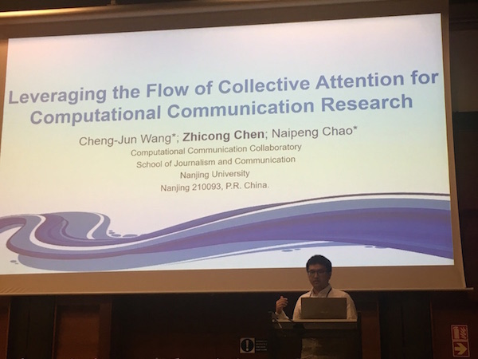

June 4, 2018
第68届国际传播学会（ICA，International Communication Association）年会于2018年5月22日至2018年5月29日在捷克共和国首都布拉格召开。南京大学计算传播学实验中心成员、二年级硕士研究生陈志聪作为代表参加并做口头报告。
国际传播学会是传播学界规模最大、影响力最广的学会，旗下囊括众多著名的传播学期刊，如Journal of Communication、Communication Theory、Journal of Computer-Mediated Communication等。一年一度的ICA年会堪称世界级的传播学学术盛会，参与人数往往逾千人。
本届ICA年会的主题是Voices，意在广泛吸取更多更广的声音，因此整个会议规模更大，除5月25日-5月28日三天的正会（Conference）之外，还有许多精彩纷呈的前会（Preconference）和后会（Postconference），每一场前会或后会持续时长大约一天，论文的panel数量不等，且相互之间并行开展。
在5月24日的会前会Data and Publics: A New Structural Transformation of the Public Sphere（Preconference）当中，南京大学计算传播学实验中心成员纪娇娇博士有一篇论文Who are making fake news on Sina Weibo被选为会议口头报告，由陈志聪代为报告。
在5月28日的Attention and Diffusion Processes（Paper Session）中，陈志聪报告了他与导师王成军、巢乃鹏的论文Leveraging the Flow of Collective Attention for Computational Communication Research，并与在场的老师和同学进行了互动和交流。

此外，在年会的颁奖环节中，香港城市大学媒体与传播学系讲座教授祝建华老师被选为国际传播学会会士（ICA Fellow），以表彰其对传播学领域的数十年如一日的付出和学术贡献。祝老师是Computational Methods兴趣小组的主要发起人，也是今年4月刚刚成立的中国新闻史学会计算传播学研究委员会（计算传播学二级分会）的首任会长。与去年相似，本届年会上，由Computational Methods兴趣小组（Interest Group）组织的Paper Session依旧场场爆满，且讨论热烈，计算方法在整个传播学领域正在受到越来越多的关注和重视，本届年会后，Computational Methods可能由Interest Group申请升级为ICA下属的Division。